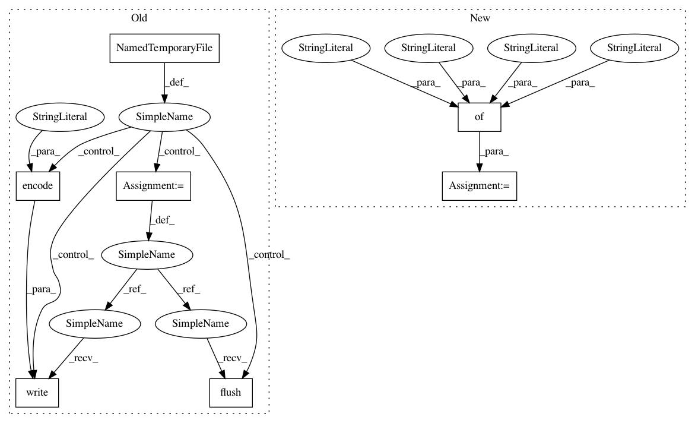

272539105f949ac28e37adac0474ac28d65256e0,tests/components/notify/test_demo.py,TestNotifyDemo,test_calling_notify_from_script_loaded_from_yaml_without_title,#TestNotifyDemo#,71
Before Change
Test 123 {{ 2 + 2 }}
with tempfile.NamedTemporaryFile() as fp:
fp.write(yaml_conf.encode("utf-8"))
fp.flush()
conf = yaml.load_yaml(fp.name)
script.call_from_config(self.hass, conf)
self.hass.block_till_done()
After Change
def test_calling_notify_from_script_loaded_from_yaml_without_title(self):
Test if we can call a notify from a script.
conf = {
"service": "notify.notify",
"data": {
"data": {
"push": {
"sound":
"US-EN-Morgan-Freeman-Roommate-Is-Arriving.wav"
}
}
},
"data_template": {"message": "Test 123 {{ 2 + 2 }}\n"},
}
script.call_from_config(self.hass, conf)
self.hass.block_till_done()
self.assertTrue(len(self.events) == 1)
In pattern: SUPERPATTERN
Frequency: 3
Non-data size: 7
Instances
Project Name: home-assistant/home-assistant
Commit Name: 272539105f949ac28e37adac0474ac28d65256e0
Time: 2016-10-17
Author: rob.capellini@gmail.com
File Name: tests/components/notify/test_demo.py
Class Name: TestNotifyDemo
Method Name: test_calling_notify_from_script_loaded_from_yaml_without_title
Project Name: home-assistant/home-assistant
Commit Name: 272539105f949ac28e37adac0474ac28d65256e0
Time: 2016-10-17
Author: rob.capellini@gmail.com
File Name: tests/components/notify/test_demo.py
Class Name: TestNotifyDemo
Method Name: test_calling_notify_from_script_loaded_from_yaml_with_title
Project Name: home-assistant/home-assistant
Commit Name: 55d305359e963da766ead6f1991d9bed4c00bb4f
Time: 2016-08-30
Author: kellerza@gmail.com
File Name: tests/components/device_tracker/test_init.py
Class Name: TestComponentsDeviceTracker
Method Name: test_reading_broken_yaml_config
Project Name: home-assistant/home-assistant
Commit Name: 272539105f949ac28e37adac0474ac28d65256e0
Time: 2016-10-17
Author: rob.capellini@gmail.com
File Name: tests/components/notify/test_demo.py
Class Name: TestNotifyDemo
Method Name: test_calling_notify_from_script_loaded_from_yaml_without_title